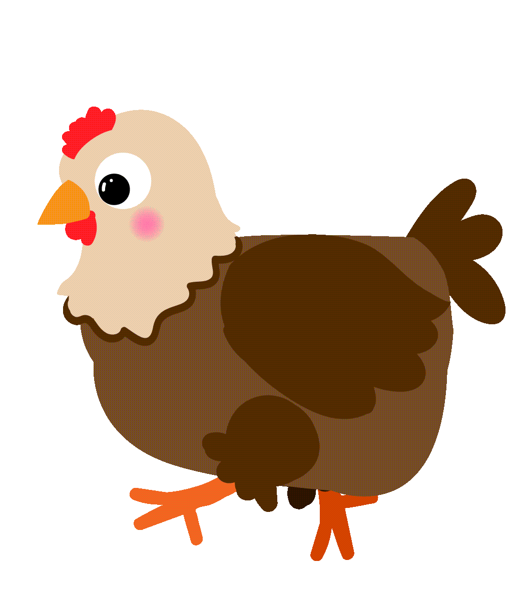

Choose your difficulty level
Gameplay
The aim of the game is to guide Pepé safely through the level and defeat the crazy chicken (‘El Pollo Loco’) at the end of the level.
Chickens

Chickens can be killed by jumping on them or throwing Tabasco bottles at them. They run from their spawn position to the start, then to the end of the level, and shuttle between the start and end.
Chicks
Chicks can be killed by jumping on them or throwing Tabasco bottles at them. They run from their spawn position to the start, then to the end of the level, and shuttle between the start and end.

El Pollo Loco

El Pollo Loco is the final boss of the level. It can only be defeated with bottles. It attacks the player at regular intervals. From time to time, it spawns chicks that attack the player.
Controls
Move left: A or Arrow left
Move rigt: W or Arrow right
Jump: Spacebar
Throw Items: T
Impressum
Dominik Koniorczyk
Ahler Kopf 15
56112 Lahnstein
d.koniorczyk@limesgames.deCredits
- 160bpm retro game square wave song - mysterious exploration by Johnmode -
freesound.org - License: Creative Commons 0 - horn_fail_wahwah_3.wav by TaranP -
freesound.org - License: Creative Commons 0 - Success Resolution Video Game Fanfare Sound Effect with Drum Roll.mp3 by FunWithSound - freesound.org -- License: Attribution 4.0
- Fullscreen icons created by mavadee - Flaticon
- Speaker icons created by Freepik - Flaticon
- Mute icons created by Mayor Icons - Flaticon